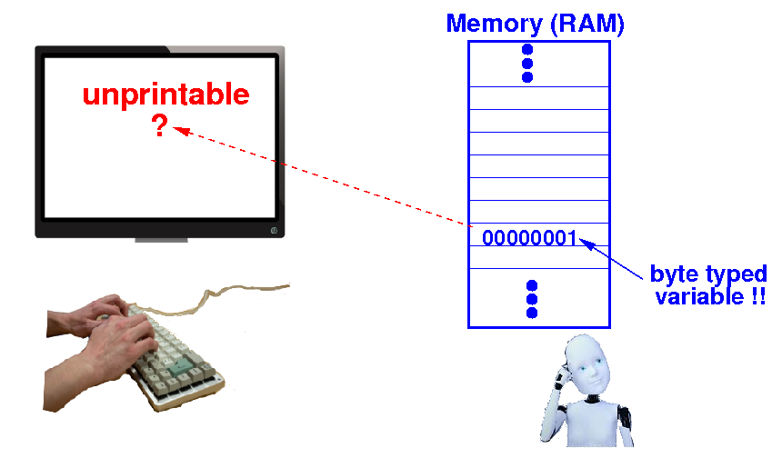
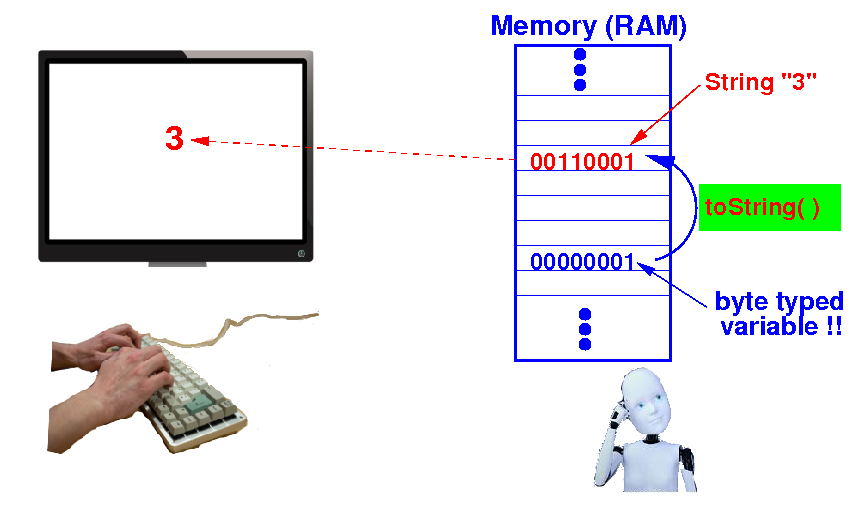

The output problem of
integer numbers
- Suppose you have
a
byte variable x
and it contains the
2s complement code
00000011
(= value
3(10)
(i.e.: 48 dots))
When we
print x,
we want to
see:
- If we
send
00000011 to
the terminal, it will
print a
strange symbol !!!
(Because
00000011 is
an unprintable ASCII code for
"End of Message")
- In order to
print
the number
3 on
a terminal, we
must send this
ASCII code to
the terminal:
|
The output problem
of integer numbers -
explained
graphically
If we "print" (= send)
the 2s complement code
00000011 (= 3(10))
directly to
the terminal:

The terminal will
not display the
decimal number
3.
The output problem
of integer numbers -
explained
graphically
In order to print
a 2s compl code in the
decimal sign-magnitude
representation to
the user,
we must first
convert to
a number
string:

And then
print (= send) the
ASCII code(s) in the
number
string to the
terminal.
Java library method that performs the
int --> String conversion
The toString( )
method in the
Integer class:
In the next few webpages,
I will show you
what is going on
inside the toString( ) method
❮
❯